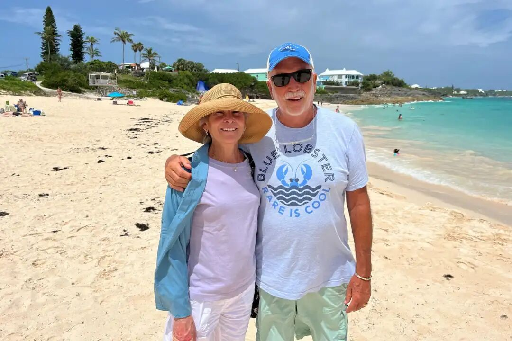
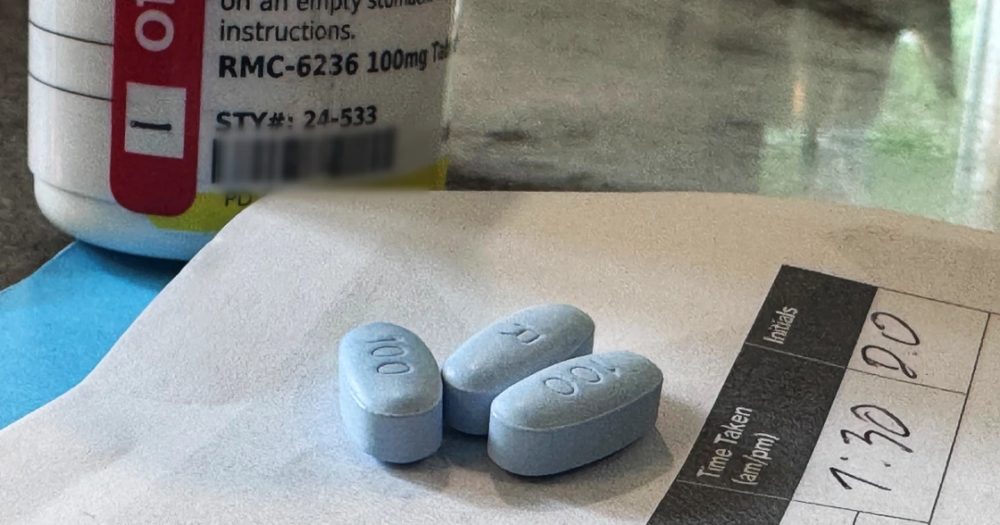
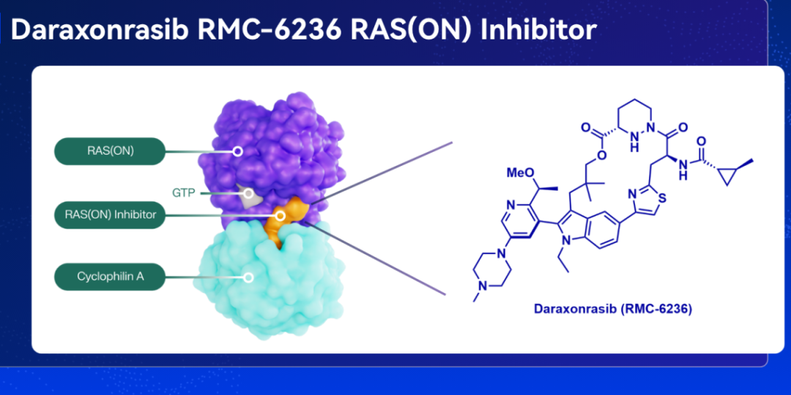
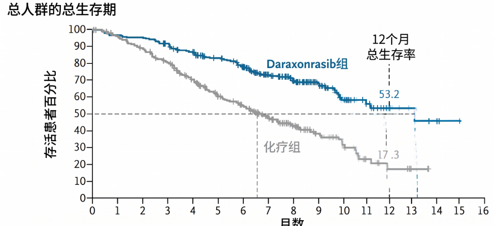
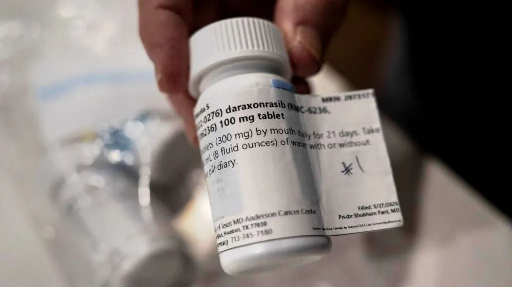

💊 500名绝症患者的生死赌局，吃新药的活下一半，化疗组十不存一？
500 Terminally Ill Patients' Deadly Gamble: New Drug Saves Half, Chemotherapy Nearly Wipes Out
71岁的黛比·奥卡特（Debby Orcutt）每天的日程schedule[ˈʃedjuːl] n. 日程是这样的：早起，和结婚47 年的丈夫罗恩一起吃早餐，两小时后，罗恩设的闹钟响起，提醒她该服药了，她吃下三片药丸，然后出门，有时带着孙辈赶校车，有时去附近一所高中做兼职，负责给食堂擦桌子。她做这份兼职倒不是因为缺钱，只是觉得继续工作让她更有活力vitality[vaɪˈtæləti] n. 活力。

黛比与丈夫husband[ˈhʌzbənd] n. 丈夫罗恩 | nbcnews
如果不说，大多数人看不出黛比是晚期advanced[ədˈvænst] adj. 晚期的胰腺癌患者。她是2024年4月确诊的，确诊前唯一的症状symptom[ˈsɪmptəm] n. 症状是左下腹一阵阵隐痛，夜里疼痛还会加重。发现时，肿瘤tumor[ˈtjuːmə] n. 肿瘤已经转移到肝脏。她接受了化疗chemotherapy[ˌkiːmoʊˈθerəpi] n. 化疗，但肿瘤逐渐耐药，化疗开始失效。
改变黛比命运的，就是她每天早晨吃下的那三颗药丸，这种口服oral[ˈɔːrəl] adj. 口服的新药，叫达沙龙拉西布（daraxonrasib）。研究显示，达沙龙拉西布能把晚期胰腺癌患者的生存期，直接延长prolong[prəˈlɒŋ] v. 延长一倍。

每天口服2~3片的胰腺癌新药drug[drʌɡ] n. 新药，达沙龙拉西布| streamlinefeed.co.ke
“癌症cancer[ˈkænsə] n. 癌症之王”与“不可成药”
胰腺癌被称为“癌症之王”，是因为它几乎不给人机会opportunity[ˌɒpəˈtjuːnəti] n. 机会。
早期几乎没有症状，等到患者感到腹痛或黄疸就医时，肿瘤往往已经扩散metastasize[məˈtæstəsaɪz] v. 扩散到肝脏或腹膜。确诊为转移性metastatic[ˌmetəˈstætɪk] adj. 转移性的胰腺癌的患者中，五年后仍然存活的只有 3%。
而对那些已经接受过一轮化疗，病情却依然恶化deteriorate[dɪˈtɪəriəreɪt] v. 恶化的人，医生只能提供如下“二线方案”：再试一种化疗药物，平均多活六个月，代价是脱发、贫血、神经损伤，以及每十个人里就有一个因为身体扛不住而被迫放弃治疗。
“即使采用我们最好的化疗方案，平均疗效efficacy[ˈefɪkəsi] n. 疗效也只能维持6个月左右，有时甚至只有几周或几个月，”俄亥俄州立大学综合癌症中心的萨米克·罗伊乔杜里（Sameek Roychowdhury）医生说。“这点时间甚至不够家属relative[ˈrelətɪv] n. 家属接受现实。”
科学家scientist[ˈsaɪəntɪst] n. 科学家们早就知道问题出在哪里。在超过 90% 的胰腺癌病例中，一个名为 KRAS 的基因发生了突变mutation[mjuːˈteɪʃən] n. 突变。在健康细胞里，KRAS 编码的蛋白质protein[ˈproʊtiːn] n. 蛋白质像一个正常运作的开关，身体需要细胞生长时短暂开启，任务完成后立即关闭。但突变将这个开关焊死在了“开”的位置，向细胞不间断地下达同一道指令：分裂divide[dɪˈvaɪd] v. 分裂，生长，再分裂。
爱德华·斯科尔尼克（Edward Scolnick）就是发现KRAS致癌oncogenic[ˌɒnkəˈdʒenɪk] adj. 致癌的突变的科学家，那是1976年的事，从那时到现在过去了50年，苹果公司成立了，互联网诞生了，克隆羊多利出现了，人类基因组计划完成了，希格斯玻色子被证实了，引力波被探测到了，黑洞照片也拍到了，火箭可以重复使用了，每个人的口袋里都放着智能手机，甚至人工智能也出现了……
但KRAS突变还在那里，难以攻克conquer[ˈkɒŋkə] v. 攻克。
被称为“不可成药”的靶点target[ˈtɑːɡɪt] n. 靶点 | gemini
传统药物设计依赖rely[rɪˈlaɪ] v. 依赖“锁与钥匙”的逻辑：在靶蛋白表面找到一个深坑，把药物分子塞进去。但 KRAS 不给你这个坑pit[pɪt] n. 坑。从结构structure[ˈstrʌktʃə] n. 结构角度，KRAS 蛋白的表面像一颗光滑的球——没有凹槽、没有口袋、没有任何药物分子能够“抓牢”的着力点。无数制药巨头giant[ˈdʒaɪənt] n. 巨头投入数十亿美元，试图制造一种能“挤进”KRAS 的药物，但一次次折戟。KRAS因此获得了一个令整个行业绝望的称号——“不可成药undruggable[ʌnˈdrʌɡəbəl] adj. 不可成药的”（undruggable）。
已经86岁的斯科尔尼克说， “我们50 年前发现的那个突变，与今天正在治疗的突变完全一致identical[aɪˈdentɪkəl] adj. 一致的。”
破局的革命医疗公司（Revolution Medicines）的科学家，没有试图继续在KRAS这颗球上撬出裂缝塞药物，他们换了一套思路approach[əˈproʊtʃ] n. 思路：既然单打独斗抓不住这颗球，那就组队抓。
达沙龙拉西布是一种“三联复合物抑制剂inhibitor[ɪnˈhɪbɪtə] n. 抑制剂”（tri-complex inhibitor）。

达沙龙拉西布的机制mechanism[ˈmekənɪzəm] n. 机制 | AiFChem
药物进入细胞后的第一步，不是立刻冲向 KRAS，而是先找到一种细胞内极其常见common[ˈkɒmən] adj. 常见的的蛋白质——亲环蛋白 A（Cyclophilin A）。与亲环蛋白 A 紧密结合binding[ˈbaɪndɪŋ] n. 结合后，药物就组成了一个二元复合体。这个动作相当于药物给自己穿上了一件定制customize[ˈkʌstəmaɪz] v. 定制的外壳，获得了全新的接触面和抓握力。
然后，这个“药物+蛋白”的组合combination[ˌkɒmbɪˈneɪʃən] n. 组合体转向 KRAS。亲环蛋白 A 提供的额外分子表面，恰好能与 KRAS 蛋白上那些原本无处下手的区域形成互补complementary[ˌkɒmplɪˈmentəri] adj. 互补的。
这种机制被称为“分子胶”（molecular glue）：药物把自己和一个帮手粘合成一个整体，再把这个整体粘到靶蛋白上，彻底封锁block[blɒk] v. 封锁它的信号传导。
达沙龙拉西布这个分子胶是否真能黏住KRAS、拯救生命，还得在实际临床clinical[ˈklɪnɪkəl] adj. 临床的实验里去经受考验。
500 名患者被招募recruit[rɪˈkruːt] v. 招募进来。他们来自 6 个国家、59 个医学中心，每一个人都处于相同的绝境desperation[ˌdespəˈreɪʃən] n. 绝境：转移性胰腺癌，至少一线化疗已经失败，肿瘤仍在生长。其中 91.8% 携带carry[ˈkæri] v. 携带最典型的 KRAS G12 突变。
他们被随机random[ˈrændəm] adj. 随机的分成两组：新药组248 人，每天口服三片蓝色药丸（daraxonrasib，每片 100mg）；对照组252 人，由主治attending[əˈtendɪŋ] adj. 主治的医生从现有最佳化疗方案中选择一种进行治疗。
这是一场“口服精准靶向药”与“静脉化疗”的正面对决showdown[ˈʃoʊdaʊn] n. 对决。
试验采用开放open[ˈoʊpən] adj. 开放的标签设计，患者和医生都知道自己被分到了哪一组。但肿瘤是否缩小的判定，由独立的影像imaging[ˈɪmɪdʒɪŋ] n. 影像学学专家在不知道分组信息的情况下盲审完成，以确保客观性。
结果在5 月 31 日的美国临床肿瘤学会（ASCO）年会conference[ˈkɒnfərəns] n. 年会上公布，论文同时发表在《新英格兰医学期刊》（NEMJ）上。
泽夫·温伯格（Zev Wainberg）记得每一张面孔face[feɪs] n. 面孔。
作为 UCLA 消化道肿瘤项目的联合主任，他主持lead[liːd] v. 主持了达沙龙拉西布的部分临床试验。
每一位走进他诊室的晚期胰腺癌患者都告诉他同一句话：我宁可prefer[prɪˈfɜː] v. 宁可吃一种没人试过的实验新药，也不想再经历一轮化疗。
但没办法，必须随机分组assign[əˈsaɪn] v. 分组，有些人被分入新药组，有些人被分入化疗组。
温伯格称之为“我所参与过的最令人情绪emotion[ɪˈmoʊʃən] n. 情绪波动的研究之一”，“我把很多患者分到了化疗组，他们中没有人还活着。”
比起常规化疗，达沙龙拉西布交出的数据远超预期expectation[ˌekspekˈteɪʃən] n. 预期：
在 KRAS G12 突变人群中，服用新药的患者中位median[ˈmiːdiən] adj. 中位的总生存期达到 13.2 个月，化疗组仅为 6.6 个月。
死亡风险risk[rɪsk] n. 风险比 0.40，意味着在任何给定时间点，新药组患者的死亡风险只有化疗组的 40%。
换一种更直观intuitive[ɪnˈtjuːɪtɪv] adj. 直观的的说法：治疗开始 12 个月后，化疗组每五个人中只有不到一个还活着（18.7%），而新药组超过一半的人（53.3%）依然存活。
✅ 肿瘤被“暂停pause[pɔːz] v. 暂停”的时间翻倍。
无进展生存期survival[sərˈvaɪvəl] n. 生存期，即肿瘤保持不生长、不扩散的时间，新药组为 7.2 个月，化疗组为 3.6 个月。
✅ 肿瘤缩小shrink[ʃrɪŋk] v. 缩小的概率翻了近三倍。
新药组的客观缓解remission[rɪˈmɪʃən] n. 缓解率为 33.2%，化疗组仅 11.8%。
每三个服药的患者中就有一个能在影像学radiologic[ˌreɪdioʊˈlɒdʒɪk] adj. 影像学的上观察到肿瘤显著缩小甚至消失，而化疗组大约十个人里才有一个。
✅ 疼痛被推迟delay[dɪˈleɪ] v. 推迟了五个月。
胰腺癌伴随的剧烈腹痛是摧毁destroy[dɪˈstrɔɪ] v. 摧毁患者意志的核心因素。
化疗组患者平均在 3.7 个月后疼痛开始显著加剧exacerbate[ɪɡˈzæsəbeɪt] v. 加剧，而新药组这一时间点被延后到了 9.0 个月。
✅ 副作用较轻微，可耐受tolerate[ˈtɒləreɪt] v. 耐受。
新药组里，85.5% 的服药者出现了皮疹rash[ræʃ] n. 皮疹，有人形容为类似严重晒伤。58.1% 的人经历了腹泻diarrhea[ˌdaɪəˈriːə] n. 腹泻，还有人出现口腔溃疡和恶心。但这些副作用绝大多数是低级别的，可以通过调整剂量dose[doʊs] n. 剂量和常规护理来管控。
新药组因副作用而彻底停药的比例仅为 1.2%，而化疗组有 11.2% 的患者因为无法忍受副作用而被迫中止terminate[ˈtɜːmɪneɪt] v. 中止治疗。在弃疗dropout[ˈdrɒpaʊt] n. 弃疗率率上，新药组只是化疗组的十分之一。
另一些副作用对比comparison[kəmˈpærɪsən] n. 对比包括：
▪️ 化疗组中性粒细胞neutrophil[ˈnjuːtrəfɪl] n. 中性粒细胞减少（免疫系统被摧毁到危险水平）：27.6%。新药组：1.7%。
▪️ 化疗组外周神经病变neuropathy[njʊˈrɒpəθi] n. 神经病变（手脚永久性麻木）：25.2%。新药组：1.7%。
▪️ 化疗组脱发alopecia[ˌæləˈpiːʃə] n. 脱发：15.0%。新药组：3.3%。
值得注意的是，在包含所有 RAS 突变类型（G12、G13、Q61）及未检出突变患者的总人群population[ˌpɒpjuˈleɪʃən] n. 人群中，达沙龙拉西布的表现几乎同样出色：中位总生存期 13.2 个月对 6.7 个月，风险比同为 0.40。

新药组和化疗组的生存期对比 | NEMJ论文journal[ˈdʒɜːnəl] n. 论文
丹娜-法伯癌症研究所的布莱恩·沃尔平 （Brian Wolpin）博士也是这项研究的作者之一，他说，“基于目前的数据data[ˈdeɪtə] n. 数据，我认为这款药物适用于所有转移性胰腺癌患者。”
当沃尔平展示新药组的生存曲线curve[kɜːv] n. 曲线时，在场的肿瘤学家们先是集体沉默，随即爆发出热烈的掌声。
亚利桑那大学癌症中心的拉克娜·什罗夫（Rachna Shroff）承认，她在四月份看到新药初步preliminary[prɪˈlɪmɪnəri] adj. 初步的数据时喜极而泣，“这对我们这些治疗胰腺癌的人来说，是前所未有、改变局面的。”
麻省总医院的哈什·辛格（Harsh Singh） 则说：“这可能是胰腺癌领域迄今为止取得的最大进展progress[ˈproʊɡres] n. 进展。句号period[ˈpɪəriəd] n. 句号。”
而且KRAS 突变并不只存在于胰腺癌中，它同样驱动drive[draɪv] v. 驱动着相当比例的肺癌、结直肠癌、卵巢癌、子宫内膜癌和胆管癌。
“胰腺癌可能是这款药的第一个战场battlefield[ˈbætəlfiːld] n. 战场，” 沃尔平说，“但不会是最后一个。现在，大门door[dɔː] n. 大门打开了。”
71岁的黛比自从2025 年 1 月开始服药后，她肝脏上的转移灶metastasis[məˈtæstəsɪs] n. 转移灶完全消失。胰腺原发primary[ˈpraɪməri] adj. 原发的肿瘤缩小了 80%。
有副作用，比如手上的轻微皮疹，嘴里长了个很大的溃疡ulcer[ˈʌlsə] n. 溃疡。但“这可是生死攸关的大事，”黛比说，“我怎么能抱怨complain[kəmˈpleɪn] v. 抱怨一点小皮疹呢？”
她还说，“我每天都感觉sense[sens] n. 感觉很好，我不会整天想着自己得了胰腺癌这件事。……坚持persist[pəˈsɪst] v. 坚持下去，保持信念，把每一天都当做最后一天来过。我觉得自己得到了第二次机会，所以一定要好好珍惜cherish[ˈtʃerɪʃ] v. 珍惜。”

装着达沙龙拉西布的药瓶vial[ˈvaɪəl] n. 药瓶 | Danielle Villasana， Reuters
类似similar[ˈsɪmɪlə] adj. 类似的情况的还有83 岁的海伦·鲁宾（Helene Rubin）。她 2022 年确诊胰腺癌，经历了手术和化疗，常规扫描scan[skæn] v. 扫描发现肺部的转移灶开始生长。她在 2025 年 2 月开始服用新药，最初是三片标准standard[ˈstændəd] adj. 标准的剂量，但她呕吐剧烈，一度住院。医生将剂量减至每日两片后，她的精力energy[ˈenədʒi] n. 精力恢复了，而后续复查结果看上去也很不错。
“这些药片确实让我有身体反应，但不会让我非常虚弱weak[wiːk] adj. 虚弱的。” 海伦说。
达沙龙拉西布不是完美perfect[ˈpɜːfɪkt] adj. 完美的的药，它还无法达到治愈。肿瘤终将找到绕过封锁的方法，产生耐药性resistance[rɪˈzɪstəns] n. 耐药性。为此，革命医疗公司同时在推进advance[ədˈvɑːns] v. 推进另外三款 RAS 抑制剂的临床试验，第四款将于年内启动试验。
纽约大学朗格尼珀尔马特癌症中心主任阿尼尔班·迈特拉（Anirban Maitra）说：“我们拥有的是一个美好的基础foundation[faʊnˈdeɪʃən] n. 基础，科学将以惊人速度在此之上构建更有效的联合方案。”
无论如何，终于有一种药物能让晚期胰腺癌患者能够一边治疗、一边继续过着平常ordinary[ˈɔːdɪnəri] adj. 平常的的日子。
那多出来的半年，是一个父亲能陪孩子过完一整个学期，是一位祖母有时间见证孙辈的出生，更是一个人在生命的最后阶段，不必被癌性疼痛和治疗的副作用，剥夺掉作为“人”的尊严dignity[ˈdɪɡnəti] n. 尊严。
[1]Wolpin, B. M., Park, W., Garrido-Laguna, I., Spira, A., Starodub, A., Sommerhalder, D., ... & Hong, D. S. (2026). Daraxonrasib in previously treated advanced RAS-mutated pancreatic cancer. New England Journal of Medicine, 394(18), 1790-1802.
[2]Carolyn Y. Johnson. (2026-05-31). Hotly anticipated pancreatic cancer drug results open new era for lethal cancer - The Washington Post. The Washington Post. Retrieved from https://www.washingtonpost.com/health/2026/05/31/hotly-anticipated-pancreatic-cancer-drug-results-open-new-era-lethal-cancer/
[3]After new drug’s ‘unprecedented’ results for pancreatic cancer, doctors look at other uses. NBC News. 2026-05-31. https://www.nbcnews.com/health/health-news/new-drugs-unprecedented-results-pancreatic-cancer-doctors-look-uses-rcna346818.
[4]Bob Cronin. (2026-05-31). In Trial, Pill Doubles Pancreatic Cancer Survival. Newser. Retrieved from https://www.newser.com/story/390139/pancreatic-cancer-trial-shows-pill-doubling-survival-rates.html
[5]Streamline Official. (2026-05-31). New Pancreatic Cancer Pill Daraxonrasib Doubles Patient Survival Rates | Streamline. Streamline. Retrieved from https://streamlinefeed.co.ke/news/new-pancreatic-cancer-pill-daraxonrasib-doubles-patient-survival-rates